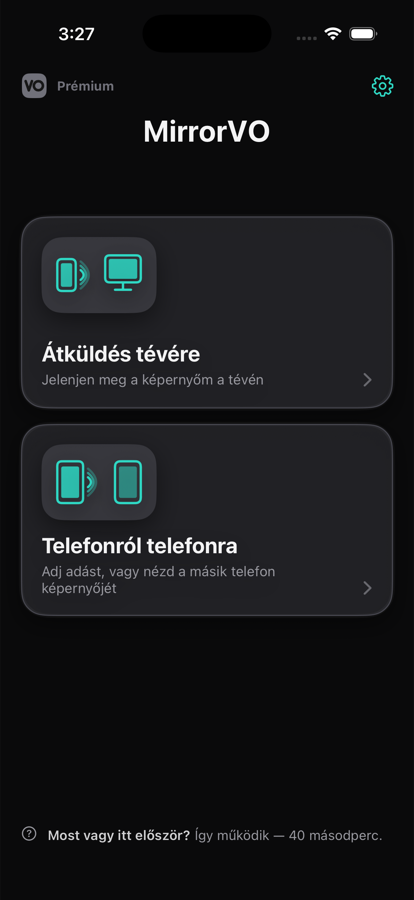
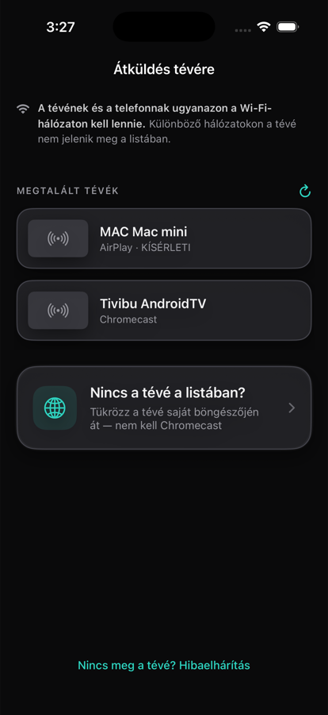
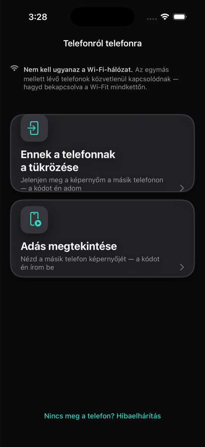

A MirrorVO a saját Wi-Fi-hálózatodon keresztül tükrözi az iPhone vagy iPad képernyőjét a tévére. Ha van Chromecastod, válaszd ki a listából. Ha nincs, használd a tévé saját webböngészőjét – egyszer kell beírnod egy rövid címet.

Se indításkor, se adás előtt, se a vásárlási képernyőn. Ingyenes használat közben sem.
Nincs mire regisztrálni. Nyisd meg, és kezdd el a tükrözést.
Az App Store-oldalunkon az Apple saját adatvédelmi címkéje szerint: „Nem gyűjt adatokat”. A kép egyenesen a telefonról megy a célra, és soha nem halad át a szervereinken.
Az ebbe a kategóriába tartozó alkalmazások többsége Chromecastot igényel. A MirrorVO egy második utat is kínál: a tévé saját webböngészőjét.
Chromecast vagy beépített Chromecastos tévé: válaszd ki a listából, és indítsd el.
A MirrorVO megjelenít egy rövid címet, egyszer beírod a tévén, és megjelenik a képernyőd. TCL, Philips és Samsung tévéken kipróbálva.

Két egymás melletti telefon közvetlenül kapcsolódik – még egy Wi-Fi-hálózaton sem kell lenniük. Az egyik megad egy kódot, a másik beírja.

Tedd a telefont és a tévét ugyanarra a hálózatra.
Válaszd ki a listából, vagy használd a böngészős utat.
10–15 másodpercig is eltarthat, mire a kép megjelenik a tévén.
Csak te indíthatod el. Az iOS nem engedi, hogy az alkalmazások maguktól kezdjenek képernyőadásba – a rendszerablak minden alkalommal a megerősítésedet kéri.
Ezek az App Store-oldalunkon is szerepelnek. Inkább a letöltés előtt tudd meg, ne utána.
Négy fokozat 1080p60-ig, semmi sincs lezárva. Ha a hálózat nem bírja, a minőség magától lejjebb lép egy fokozatot, majd visszaáll, amint lehet – neked semmit sem kell tenned.
Türkçe, English, Deutsch, Español, Français, Русский, 日本語, العربية és még 22 nyelv. Ha a telefonod egy nyelven van, de az alkalmazást máson szeretnéd: Beállítások → Nyelv. A telefon többi része nem változik.